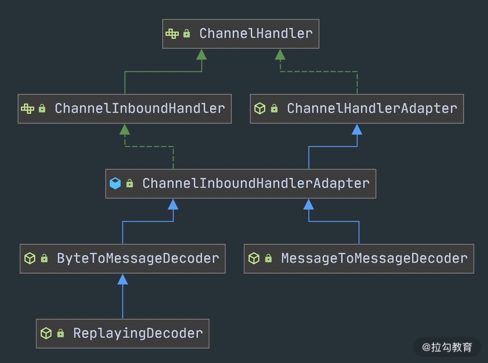

- 00 学好 Netty，是你修炼 Java 内功的必经之路.md.html
- 01 初识 Netty：为什么 Netty 这么流行？.md.html
- 02 纵览全局：把握 Netty 整体架构脉络.md.html
- 03 引导器作用：客户端和服务端启动都要做些什么？.md.html
- 04 事件调度层：为什么 EventLoop 是 Netty 的精髓？.md.html
- 05 服务编排层：Pipeline 如何协调各类 Handler ？.md.html
- 06 粘包拆包问题：如何获取一个完整的网络包？.md.html
- 07 接头暗语：如何利用 Netty 实现自定义协议通信？.md.html
- 08 开箱即用：Netty 支持哪些常用的解码器？.md.html
- 09 数据传输：writeAndFlush 处理流程剖析.md.html
- 10 双刃剑：合理管理 Netty 堆外内存.md.html
- 11 另起炉灶：Netty 数据传输载体 ByteBuf 详解.md.html
- 12 他山之石：高性能内存分配器 jemalloc 基本原理.md.html
- 13 举一反三：Netty 高性能内存管理设计（上）.md.html
- 14 举一反三：Netty 高性能内存管理设计（下）.md.html
- 15 轻量级对象回收站：Recycler 对象池技术解析.md.html
- 16 IO 加速：与众不同的 Netty 零拷贝技术.md.html
- 17 源码篇：从 Linux 出发深入剖析服务端启动流程.md.html
- 18 源码篇：解密 Netty Reactor 线程模型.md.html
- 19 源码篇：一个网络请求在 Netty 中的旅程.md.html
- 20 技巧篇：Netty 的 FastThreadLocal 究竟比 ThreadLocal 快在哪儿？.md.html
- 21 技巧篇：延迟任务处理神器之时间轮 HashedWheelTimer.md.html
- 22 技巧篇：高性能无锁队列 Mpsc Queue.md.html
- 23 架构设计：如何实现一个高性能分布式 RPC 框架.md.html
- 24 服务发布与订阅：搭建生产者和消费者的基础框架.md.html
- 25 远程通信：通信协议设计以及编解码的实现.md.html
- 26 服务治理：服务发现与负载均衡机制的实现.md.html
- 27 动态代理：为用户屏蔽 RPC 调用的底层细节.md.html
- 28 实战总结：RPC 实战总结与进阶延伸.md.html
- 29 编程思想：Netty 中应用了哪些设计模式？.md.html
- 30 实践总结：Netty 在项目开发中的一些最佳实践.md.html
- 31 结束语 技术成长之路：如何打造自己的技术体系.md.html
- 捐赠
07 接头暗语：如何利用 Netty 实现自定义协议通信？
既然是网络编程，自然离不开通信协议，应用层之间通信需要实现各种各样的网络协议。在项目开发的过程中，我们就需要去构建满足自己业务场景的应用层协议。在上节课中我们介绍了如何使用网络协议解决 TCP 拆包/粘包的底层问题，本节课我们将在此基础上继续讨论如何设计一个高效、可扩展、易维护的自定义通信协议，以及如何使用 Netty 实现自定义通信协议。
通信协议设计
所谓协议，就是通信双方事先商量好的接口暗语，在 TCP 网络编程中，发送方和接收方的数据包格式都是二进制，发送方将对象转化成二进制流发送给接收方，接收方获得二进制数据后需要知道如何解析成对象，所以协议是双方能够正常通信的基础。
目前市面上已经有不少通用的协议，例如 HTTP、HTTPS、JSON-RPC、FTP、IMAP、Protobuf 等。通用协议兼容性好，易于维护，各种异构系统之间可以实现无缝对接。如果在满足业务场景以及性能需求的前提下，推荐采用通用协议的方案。相比通用协议，自定义协议主要有以下优点。
- 极致性能：通用的通信协议考虑了很多兼容性的因素，必然在性能方面有所损失。
- 扩展性：自定义的协议相比通用协议更好扩展，可以更好地满足自己的业务需求。
- 安全性：通用协议是公开的，很多漏洞已经很多被黑客攻破。自定义协议更加安全，因为黑客需要先破解你的协议内容。
那么如何设计自定义的通信协议呢？这个答案见仁见智，但是设计通信协议有经验方法可循。结合实战经验我们一起看下一个完备的网络协议需要具备哪些基本要素。
1. 魔数
魔数是通信双方协商的一个暗号，通常采用固定的几个字节表示。魔数的作用是防止任何人随便向服务器的端口上发送数据。服务端在接收到数据时会解析出前几个固定字节的魔数，然后做正确性比对。如果和约定的魔数不匹配，则认为是非法数据，可以直接关闭连接或者采取其他措施以增强系统的安全防护。魔数的思想在压缩算法、Java Class 文件等场景中都有所体现，例如 Class 文件开头就存储了魔数 0xCAFEBABE，在加载 Class 文件时首先会验证魔数的正确性。
2. 协议版本号
随着业务需求的变化，协议可能需要对结构或字段进行改动，不同版本的协议对应的解析方法也是不同的。所以在生产级项目中强烈建议预留协议版本号这个字段。
3. 序列化算法
序列化算法字段表示数据发送方应该采用何种方法将请求的对象转化为二进制，以及如何再将二进制转化为对象，如 JSON、Hessian、Java 自带序列化等。
4. 报文类型
在不同的业务场景中，报文可能存在不同的类型。例如在 RPC 框架中有请求、响应、心跳等类型的报文，在 IM 即时通信的场景中有登陆、创建群聊、发送消息、接收消息、退出群聊等类型的报文。
5. 长度域字段
长度域字段代表请求数据的长度，接收方根据长度域字段获取一个完整的报文。
6. 请求数据
请求数据通常为序列化之后得到的二进制流，每种请求数据的内容是不一样的。
7. 状态
状态字段用于标识请求是否正常。一般由被调用方设置。例如一次 RPC 调用失败，状态字段可被服务提供方设置为异常状态。
8. 保留字段
保留字段是可选项，为了应对协议升级的可能性，可以预留若干字节的保留字段，以备不时之需。
通过以上协议基本要素的学习，我们可以得到一个较为通用的协议示例：
+---------------------------------------------------------------+
| 魔数 2byte | 协议版本号 1byte | 序列化算法 1byte | 报文类型 1byte |
+---------------------------------------------------------------+
| 状态 1byte | 保留字段 4byte | 数据长度 4byte |
+---------------------------------------------------------------+
| 数据内容 （长度不定） |
+---------------------------------------------------------------+
Netty 如何实现自定义通信协议
在学习完如何设计协议之后，我们又该如何在 Netty 中实现自定义的通信协议呢？其实 Netty 作为一个非常优秀的网络通信框架，已经为我们提供了非常丰富的编解码抽象基类，帮助我们更方便地基于这些抽象基类扩展实现自定义协议。
首先我们看下 Netty 中编解码器是如何分类的。
Netty 常用编码器类型：
- MessageToByteEncoder 对象编码成字节流；
- MessageToMessageEncoder 一种消息类型编码成另外一种消息类型。
Netty 常用解码器类型：
- ByteToMessageDecoder/ReplayingDecoder 将字节流解码为消息对象；
- MessageToMessageDecoder 将一种消息类型解码为另外一种消息类型。
编解码器可以分为一次解码器和二次解码器，一次解码器用于解决 TCP 拆包/粘包问题，按协议解析后得到的字节数据。如果你需要对解析后的字节数据做对象模型的转换，这时候便需要用到二次解码器，同理编码器的过程是反过来的。
- 一次编解码器：MessageToByteEncoder/ByteToMessageDecoder。
- 二次编解码器：MessageToMessageEncoder/MessageToMessageDecoder。
下面我们对 Netty 中常用的抽象编解码类进行详细的介绍。
抽象编码类

通过抽象编码类的继承图可以看出，编码类是 ChanneOutboundHandler 的抽象类实现，具体操作的是 Outbound 出站数据。
- MessageToByteEncoder
MessageToByteEncoder 用于将对象编码成字节流，MessageToByteEncoder 提供了唯一的 encode 抽象方法，我们只需要实现encode 方法即可完成自定义编码。那么encode() 方法是在什么时候被调用的呢？我们一起看下MessageToByteEncoder 的核心源码片段，如下所示。
@Override
public void write(ChannelHandlerContext ctx, Object msg, ChannelPromise promise) throws Exception {
ByteBuf buf = null;
try {
if (acceptOutboundMessage(msg)) { // 1. 消息类型是否匹配
@SuppressWarnings("unchecked")
I cast = (I) msg;
buf = allocateBuffer(ctx, cast, preferDirect); // 2. 分配 ByteBuf 资源
try {
encode(ctx, cast, buf); // 3. 执行 encode 方法完成数据编码
} finally {
ReferenceCountUtil.release(cast);
}
if (buf.isReadable()) {
ctx.write(buf, promise); // 4. 向后传递写事件
} else {
buf.release();
ctx.write(Unpooled.EMPTY_BUFFER, promise);
}
buf = null;
} else {
ctx.write(msg, promise);
}
} catch (EncoderException e) {
throw e;
} catch (Throwable e) {
throw new EncoderException(e);
} finally {
if (buf != null) {
buf.release();
}
}
}
MessageToByteEncoder 重写了 ChanneOutboundHandler 的 write() 方法，其主要逻辑分为以下几个步骤：
- acceptOutboundMessage 判断是否有匹配的消息类型，如果匹配需要执行编码流程，如果不匹配直接继续传递给下一个 ChannelOutboundHandler；
- 分配 ByteBuf 资源，默认使用堆外内存；
- 调用子类实现的 encode 方法完成数据编码，一旦消息被成功编码，会通过调用 ReferenceCountUtil.release(cast) 自动释放；
- 如果 ByteBuf 可读，说明已经成功编码得到数据，然后写入 ChannelHandlerContext 交到下一个节点；如果 ByteBuf 不可读，则释放 ByteBuf 资源，向下传递空的 ByteBuf 对象。
编码器实现非常简单，不需要关注拆包/粘包问题。如下例子，展示了如何将字符串类型的数据写入到 ByteBuf 实例，ByteBuf 实例将传递给 ChannelPipeline 链表中的下一个 ChannelOutboundHandler。
public class StringToByteEncoder extends MessageToByteEncoder<String> {
@Override
protected void encode(ChannelHandlerContext channelHandlerContext, String data, ByteBuf byteBuf) throws Exception {
byteBuf.writeBytes(data.getBytes());
}
}
- MessageToMessageEncoder
MessageToMessageEncoder 与 MessageToByteEncoder 类似，同样只需要实现 encode 方法。与 MessageToByteEncoder 不同的是，MessageToMessageEncoder 是将一种格式的消息转换为另外一种格式的消息。其中第二个 Message 所指的可以是任意一个对象，如果该对象是 ByteBuf 类型，那么基本上和 MessageToByteEncoder 的实现原理是一致的。此外 MessageToByteEncoder 的输出结果是对象列表，编码后的结果属于中间对象，最终仍然会转化成 ByteBuf 进行传输。
MessageToMessageEncoder 常用的实现子类有 StringEncoder、LineEncoder、Base64Encoder 等。以 StringEncoder 为例看下 MessageToMessageEncoder 的用法。源码示例如下：将 CharSequence 类型（String、StringBuilder、StringBuffer 等）转换成 ByteBuf 类型，结合 StringDecoder 可以直接实现 String 类型数据的编解码。
@Override
protected void encode(ChannelHandlerContext ctx, CharSequence msg, List<Object> out) throws Exception {
if (msg.length() == 0) {
return;
}
out.add(ByteBufUtil.encodeString(ctx.alloc(), CharBuffer.wrap(msg), charset));
}
抽象解码类
同样，我们先看下抽象解码类的继承关系图。解码类是 ChanneInboundHandler 的抽象类实现，操作的是 Inbound 入站数据。解码器实现的难度要远大于编码器，因为解码器需要考虑拆包/粘包问题。由于接收方有可能没有接收到完整的消息，所以解码框架需要对入站的数据做缓冲操作，直至获取到完整的消息。

- 抽象解码类 ByteToMessageDecoder。
首先，我们看下 ByteToMessageDecoder 定义的抽象方法：
public abstract class ByteToMessageDecoder extends ChannelInboundHandlerAdapter {
protected abstract void decode(ChannelHandlerContext ctx, ByteBuf in, List<Object> out) throws Exception;
protected void decodeLast(ChannelHandlerContext ctx, ByteBuf in, List<Object> out) throws Exception {
if (in.isReadable()) {
decodeRemovalReentryProtection(ctx, in, out);
}
}
}
decode() 是用户必须实现的抽象方法，在该方法在调用时需要传入接收的数据 ByteBuf，及用来添加编码后消息的 List。由于 TCP 粘包问题，ByteBuf 中可能包含多个有效的报文，或者不够一个完整的报文。Netty 会重复回调 decode() 方法，直到没有解码出新的完整报文可以添加到 List 当中，或者 ByteBuf 没有更多可读取的数据为止。如果此时 List 的内容不为空，那么会传递给 ChannelPipeline 中的下一个ChannelInboundHandler。
此外 ByteToMessageDecoder 还定义了 decodeLast() 方法。为什么抽象解码器要比编码器多一个 decodeLast() 方法呢？因为 decodeLast 在 Channel 关闭后会被调用一次，主要用于处理 ByteBuf 最后剩余的字节数据。Netty 中 decodeLast 的默认实现只是简单调用了 decode() 方法。如果有特殊的业务需求，则可以通过重写 decodeLast() 方法扩展自定义逻辑。
ByteToMessageDecoder 还有一个抽象子类是 ReplayingDecoder。它封装了缓冲区的管理，在读取缓冲区数据时，你无须再对字节长度进行检查。因为如果没有足够长度的字节数据，ReplayingDecoder 将终止解码操作。ReplayingDecoder 的性能相比直接使用 ByteToMessageDecoder 要慢，大部分情况下并不推荐使用 ReplayingDecoder。
- 抽象解码类 MessageToMessageDecoder。
MessageToMessageDecoder 与 ByteToMessageDecoder 作用类似，都是将一种消息类型的编码成另外一种消息类型。与 ByteToMessageDecoder 不同的是 MessageToMessageDecoder 并不会对数据报文进行缓存，它主要用作转换消息模型。比较推荐的做法是使用 ByteToMessageDecoder 解析 TCP 协议，解决拆包/粘包问题。解析得到有效的 ByteBuf 数据，然后传递给后续的 MessageToMessageDecoder 做数据对象的转换，具体流程如下图所示。

通信协议实战
在上述通信协议设计的小节内容中，我们提到了协议的基本要素并给出了一个较为通用的协议示例。下面我们通过 Netty 的编辑码框架实现该协议的解码器，加深我们对 Netty 编解码框架的理解。
在实现协议编码器之前，我们首先需要清楚一个问题：如何判断 ByteBuf 是否存在完整的报文？最常用的做法就是通过读取消息长度 dataLength 进行判断。如果 ByteBuf 的可读数据长度小于 dataLength，说明 ByteBuf 还不够获取一个完整的报文。在该协议前面的消息头部分包含了魔数、协议版本号、数据长度等固定字段，共 14 个字节。固定字段长度和数据长度可以作为我们判断消息完整性的依据，具体编码器实现逻辑示例如下：
/*
+---------------------------------------------------------------+
| 魔数 2byte | 协议版本号 1byte | 序列化算法 1byte | 报文类型 1byte |
+---------------------------------------------------------------+
| 状态 1byte | 保留字段 4byte | 数据长度 4byte |
+---------------------------------------------------------------+
| 数据内容 （长度不定） |
+---------------------------------------------------------------+
*/
@Override
public final void decode(ChannelHandlerContext ctx, ByteBuf in, List<Object> out) {
// 判断 ByteBuf 可读取字节
if (in.readableBytes() < 14) {
return;
}
in.markReaderIndex(); // 标记 ByteBuf 读指针位置
in.skipBytes(2); // 跳过魔数
in.skipBytes(1); // 跳过协议版本号
byte serializeType = in.readByte();
in.skipBytes(1); // 跳过报文类型
in.skipBytes(1); // 跳过状态字段
in.skipBytes(4); // 跳过保留字段
int dataLength = in.readInt();
if (in.readableBytes() < dataLength) {
in.resetReaderIndex(); // 重置 ByteBuf 读指针位置
return;
}
byte[] data = new byte[dataLength];
in.readBytes(data);
SerializeService serializeService = getSerializeServiceByType(serializeType);
Object obj = serializeService.deserialize(data);
if (obj != null) {
out.add(obj);
}
}
上述实现中所涉及的 ByteBuf API，在本章节就不做详细阐述了。在本专栏第三章我们会深入学习 ByteBuf。
总结
本节课我们学习了协议设计的基本要素，以及如何使用 Netty 实现自定义协议。Netty 提供了一组 ChannelHandler 实现的抽象类，在项目开发中基于这些抽象类实现自定义的编解码器具备较好的可扩展性，最后通过具体示例协议的实战加深对编解码器的理解。你学会了吗？
当然 Netty 在编解码方面所做的工作远不止于此。它还提供了丰富的开箱即用的编解码器，下节课我们便一起探索实用的编解码技巧。
© 2019 - 2023 Liangliang Lee. Powered by gin and hexo-theme-book.